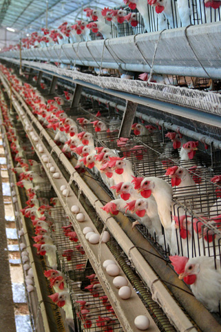

Птицеводство
Птицеводство — отрасль сельского хозяйства, специализирующаяся на производстве мяса птицы, пищевых яиц, и пуха.
Содержание яичных кур в клеточной батарее в условиях промышленного птицеводства (Бразилия)
История
В Китае, Индии, Египте, Древнем Риме куроводство достигло значительного совершенства за много веков до новой эры, а зародилось оно в Индии 3 тысячи лет до н. э., где впервые были одомашнены куры и откуда оно распространилось в другие страны. Сведения о разведении домашних уток и гусей в Европе и Азии встречаются за несколько веков до н. э. Индейки были одомашнены в Америке, а в Европу они впервые были привезены в XVI веке. В Европе рациональная постановка разведения кур и других птиц началась с конца XVIII века во Франции, Голландии и Англии. В последующий период селекцией и надлежащим уходом за курами, их откармливанием и скрещиваниями были достигнуты значительные результаты в улучшении хозяйственно полезных качеств кур (яйценоскость, плодовитость, вкус мяса и т. д.) и получено большое разнообразие пород не только в Западной, но и в Восточной Европе[5]. Именно куроводство получило исторически массовое распространение из-за того, что куры (а в большинстве случаев птицеводство — это разведение кур) неприхотливы в еде, в уходе и содержании. Однако самым важным является то, что количество снесённых яиц намного больше, если сравнивать с другими видами птиц за аналогичный период.
Мировое производство
В 2019 году около 71 млрд голов животных было забито для производства куриного мяса по всему миру, на 3,1 % больше, чем в 2018 году. Среднемировой убойный выход куриного мяса 1,7 кг, оставаясь относительно стабильным. В 2019 году мировое производство куриного мяса составило 119 млн тонн. Объем производства увеличивается в среднем на 3,7 % в год с 2007 года. С 2007 по 2019 год наибольший среднегодовой прирост был достигнут в России.
Лидеры производства куриного мяса в 2019 году США (20 млн тонн), Бразилия (16 млн тонн) и Китай (14 млн тонн), на долю которых приходится 42 % мирового производства. За этими странами следуют Россия, Индия, Мексика, Индонезия, Япония, Турция, Иран, Аргентина и Мьянма, на долю которых в совокупности приходится еще 22 %.[9]
По данным Ассоциации производителей и торговцев домашней птицей Европейского Союза в 2017 году были достигнуты следующие приблизительные показатели в производстве и продаже мяса домашних птиц для ведущих производителей[10]:
| Страна | Произведено кур | Экспортировано кур | Произведено бройлеров |
| Аргентина | ↗ 2,107 | ↗ 0,185 | ↗ 2,086 |
| Мексика | ↗ 3,061 | - | ↗ 3,400 |
| Россия | ↗ 4,580 | - | ↗ 3,870 |
| Бразилия | ↗ 13,992 | ↗ 4,000 | ↗ 13,118 |
| Евросоюз | ↗ 15,872 | ↗ 1,497 | ↗ 12,844 |
| США | ↗ 21,316 | ↗ 3,091 | ↗ 18,596 |